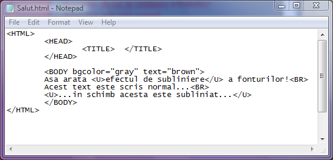
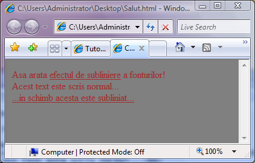

Scriere subliniata
Pentru evidentierea prin subliniere a portiunilor de text, acestea se introduc intre perechile de etichete U (Underline=Subliniere) si respectiv /U, dupa cum este ilustrat in exemplul urmator:


Inapoi la Formatare fonturi